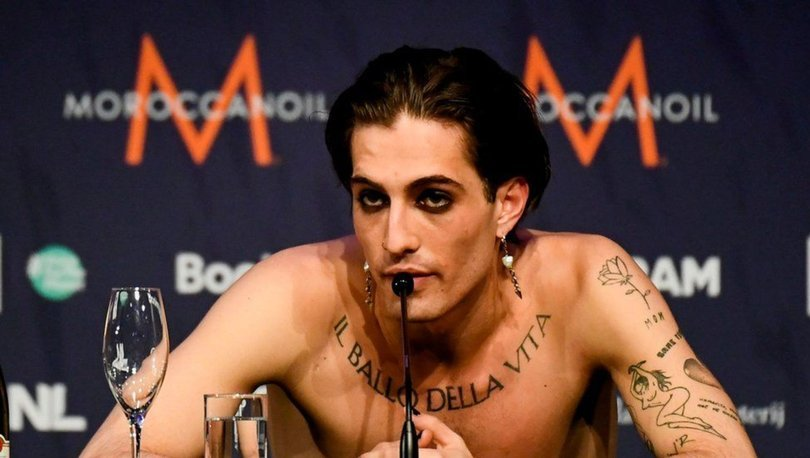
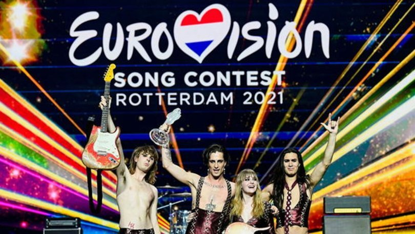

DÜNYA
Kokain kullanmakla suçlanan Eurovision birincisi Damiano David'in testi negatif çıktı
Eurovision organizatörleri, gelen yoğun iddiaların ardından David'in kokain kullanıp kullanmadığını gösteren bir testten geçtiğini, sonucun da negatif çıktığını açıkladı. Ünlü vokalist hakkında çıkan canlı yayında kokain çektiği yönündeki spekülasyonları yalanlayarak, Roma'ya döndükten sonra gönüllü olarak uyuşturucu testi yaptıracağını açıklamıştı. Yarışmada ikinci gelen Fransa'dan, "İtalya'nın Eurovision zaferini şarkıcının kokain testi negatif çıkarsa kabul edeceğiz" açıklaması gelmişti.
Hollanda'da düzenlenen 65'inci Eurovision Şarkı Yarışması'nı kazanan İtalyan Maneskin rock grubunun solisti Damiano David'in kokain testi negatif çıktı. Testin pozitif çıkması durumunda İtalya'nın yarışmadan diskalifiye edilme riski ile karşı karşıya kalacaktı.
Grubuyla Eurovision yarışmasını kazanan Damiano David bu tür iddiaların galibiyete gölge düşürdüğünü ve bunun "çok kırıcı" olduğunu ifade etmişti. İtalyan sanatçı, canlı yayında oturduğu masanın köşesine yaslanıp öne eğildiği anların kokain kullanma şeklinde yorumlanmasına tepki göstermişti. Ünlü vokalist, pazar sabahı düzenlediği basın toplantısında, "Ben uyuşturucu kullanmıyorum. Lütfen çocuklar. Bunun gerçek olduğunu söylemeyin, kokaine hayır" sözleriyle hakkındaki iddiaları yalanlamıştı. Görüntüde, grup canlı yayında zaferini kutlarken, şarkıcının yüzünü masaya doğru eğdiği görülüyor. Bu durum şarkıcının uyuşturucu kullandığı yorumlarını beraberinde getirdi. Damiano David ise gitarist arkadaşı Thomas Raggi'nin bir cam bardak kırdığı için o anda aşağı doğru baktığını söyledi.
BU SENEKİ EUROVISION'UN GALİBİ İTALYA, İKİNCİ FRANSA
Hollanda'da bu yıl 65'incisi düzenlenen Eurovision Şarkı Yarışması'nı, "Zitti E Buoni" adlı şarkısıyla İtalya'yı temsil eden Maneskin rock grubu kazandı.
Yarışmada Fransa'nın temsilcisi Barbara Pravi'nin seslendirdiği "Voila" adlı şarkı 499 puanla ikinciliği, İsviçre temsilcisi Gjon's Tears'in "Tout l'Univers" adlı şarkısı da 432 puanla üçüncülüğü elde etti.
Yarışmada Azerbaycan'ı "Mata Hari" adlı eserle temsil eden Efendi de 65 puanla 20'nci oldu.
Yarışma, 45 ülkede 200 milyon kişi tarafından canlı izlendi.